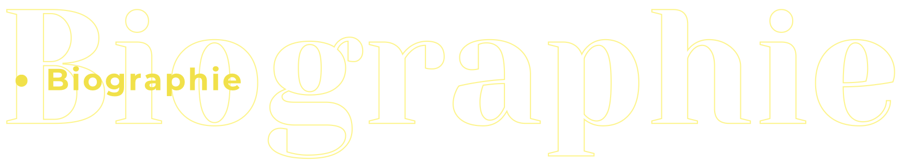
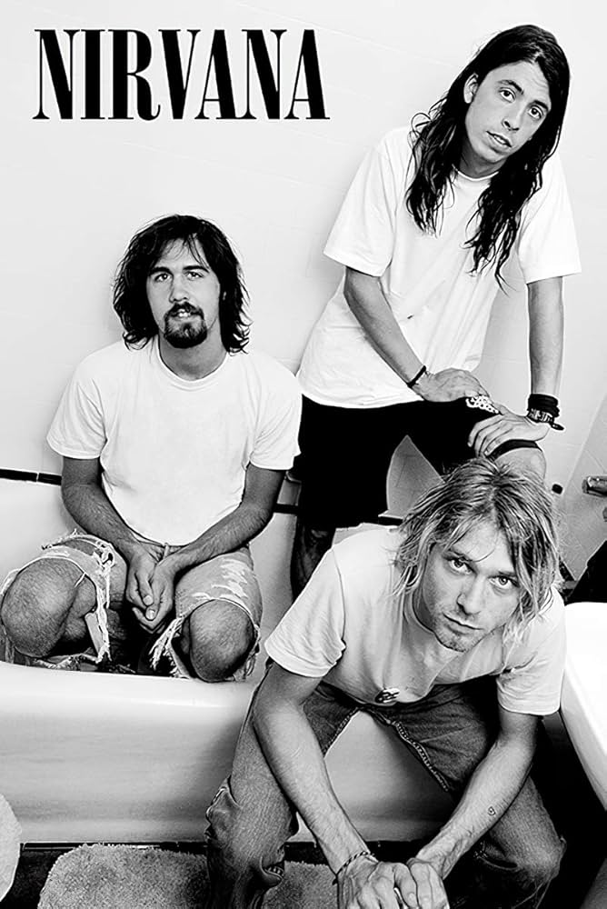
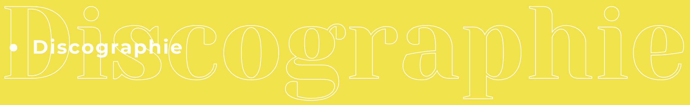
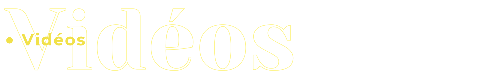

Biographie de Nirvana
Nirvana est un groupe de rock américain formé en 1987 à Aberdeen, Washington, par Kurt Cobain (chant, guitare) et Krist Novoselic (basse), rejoints plus tard par Dave Grohl (batterie). Pionnier du grunge, Nirvana connaît un succès mondial avec l'album Nevermind (1991) et son hit emblématique "Smells Like Teen Spirit". Leur musique, mêlant mélodies accrocheuses et son brut, marque une génération. La disparition tragique de Cobain en 1994 met fin au groupe, mais leur influence reste immense sur le rock alternatif.
Rock Alternatif
Actif
Années 2000

Albums Studio
- Bleach (1989)
- Nevermind (1991)
- In Utero (1993)
Albums Live
- MTV Unplugged in New York (1994)
- From the Muddy Banks of the Wishkah (1996)
- Live at Reading (2009)
- Live at the Paramount (2019)
- Live and Loud (2019)
